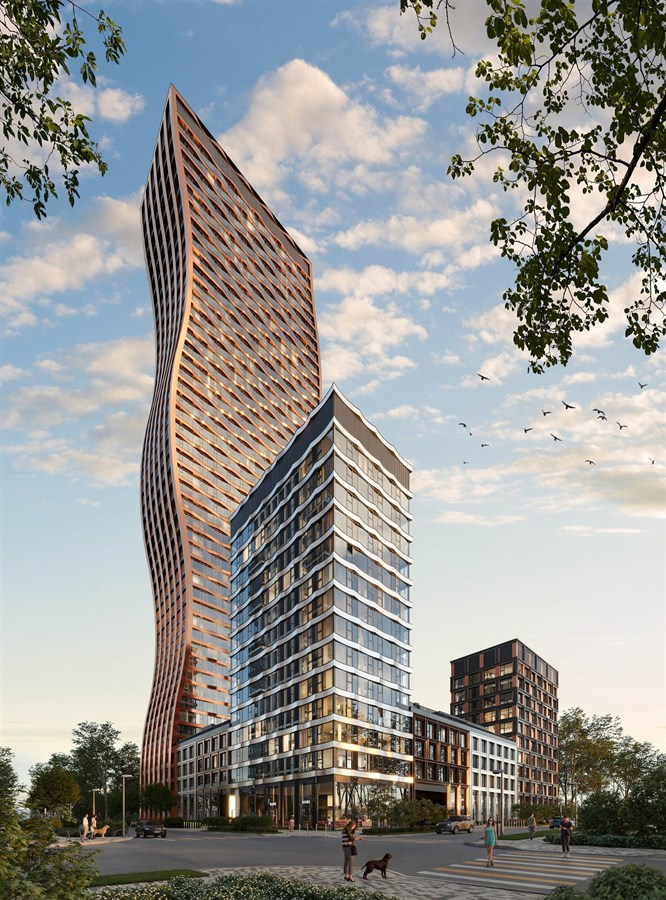
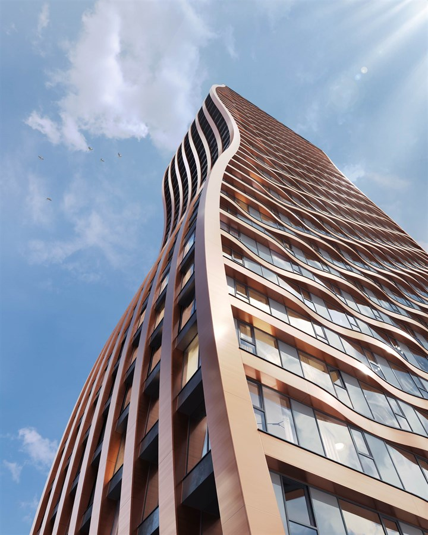

ЖК CityZen в Тушино: подбор квартир в новостройке с комиссией 0 ₽
Обновлено: 28 апреля 2026
🏙️ Подбор квартир в новостройках CityZen • 🔥 Скидки от застройщика • 💸 Комиссия 0 ₽ • ⭐ Юридическая чистота сделки


CityZen — жилой проект в районе Покровское-Стрешнево (СЗАО), с адресной привязкой к улице Вишневой и маршрутом до метро «Тушинская» около 20 минут пешком. По текущей выборке в проекте 158 лотов, диапазон цен начинается от 16,1 млн ₽. Эту страницу мы собрали как коммерческий разбор под покупку: какие форматы реально есть в продаже, как считать бюджет сделки, где ключевые риски и как пройти путь от подбора до подписания без лишних финансовых просадок.
Ключевые параметры
- Название: CityZen
- Район: Покровское-Стрешнево, СЗАО, Москва
- Адрес: г. Москва, ул. Вишневая, вл. 7, стр. 80
- Метро: Тушинская, около 20 минут пешком
- Застройщик: MR Group
- Класс: бизнес (по позиционированию проекта)
- Тип дома: кирпично-монолитный
- Этажность: до 48 этажей
- Корпуса: 9
- Лотов в актуальной выборке: 158
- Площади: 23,8-109,5 м²
- Отделка: черновая / подготовка под чистовую
- Оплата: ипотека, рассрочка
- Срок сдачи: 3 кв. 2027
Цены и планировки
По данным текущей карточки проекта CityZen ценовой диапазон находится в коридоре от 16,1 млн до 47,8 млн ₽. Ориентир по цене за квадратный метр в доступных лотах: примерно 410 900-698 500 ₽/м². Ниже — срез по типам квартир.
| Тип | Площадь | Цена от | Лотов |
|---|---|---|---|
| Студия | 23,8-30,6 м² | от 16,1 млн ₽ | 10 |
| 1-комн | 33,0-49,3 м² | от 18,8 млн ₽ | 70 |
| 2-комн | 52,5-72,1 м² | от 25,8 млн ₽ | 54 |
| 3-комн | 73,9-86,8 м² | от 33,4 млн ₽ | 21 |
| 4+ комн | 107,1-109,5 м² | от 44,0 млн ₽ | 3 |
Для корректного сравнения вариантов смотрите не только стартовую цену, а полный бюджет владения: первоначальный взнос, график платежа, стоимость отделки после передачи ключей, меблировку, страховку и резерв на приемку. Это особенно важно для проектов с высоким спросом, где темп принятия решений высокий, а цена ошибки в сделке может быть ощутимой.
О жилом комплексе
CityZen формируется как многофункциональный жилой кластер в развивающейся части Тушинского направления: жилые секции, коммерческий контур и общественные пространства в единой среде. По описанию проекта акцент сделан на панорамное остекление, выразительную архитектуру корпусов и функциональные планировки, ориентированные на городской ритм жизни. Форматы отделки — черновая и подготовка под чистовую — дают выбор между контролем собственного дизайн-бюджета и сокращением сроков до заселения.
На уровне повседневного сценария проект интересен тем, что соединяет жилье, сервис и транзитную доступность: можно строить как семейный маршрут «дом-работа-школа», так и инвестиционный сценарий под аренду, где важны транспортная связка и ликвидная площадь. Для покупателя это означает необходимость трезво оценивать не «красивую картинку», а баланс локации, метража и финансовой модели.
Инфраструктура и транспорт
Базовый транспортный ориентир по проекту — станция метро «Тушинская» (около 20 минут пешком). Адресная привязка к улице Вишневой в Покровском-Стрешнево дает рабочую связку с инфраструктурой северо-западного направления: ритейл, городские сервисы, социальные объекты и развитие локальной коммерции внутри района.
Для решения о покупке важно пройти маршрут вживую в часы пик и проверить фактическое время до метро по вашему ежедневному сценарию. Это снижает риск, когда объект подходит по цене, но не проходит по реальной логистике. В инвестиционной модели этот же фактор напрямую влияет на ликвидность сдачи.
Корпуса и сроки сдачи
| Корпус | Очередь | Срок сдачи | Технология |
|---|---|---|---|
| 9 корпусов проекта | Детализация по корпусам уточняется | 3 кв. 2027 | Кирпично-монолитная |
Перед авансом по конкретному лоту запросите технический паспорт корпуса, текущий статус строительной готовности, условия передачи и перечень дефектов, которые устраняются по гарантийной процедуре.
Кому подходит / Кому может не подойти
Кому подходит
- Покупателям, которым нужен новый проект в Тушино с понятной ценовой линейкой и выбором метража.
- Тем, кто сравнивает 1-2-комнатные форматы под собственное проживание и дальнейшую ликвидность.
- Инвесторам, которым важен сценарий аренды в развивающемся районе с метро в пешем/комбинированном доступе.
Кому может не подойти
- Покупателям, ожидающим формат «полностью готово под ключ» без дополнительных работ по отделке.
- Тем, у кого нет финансового резерва на доработку квартиры после передачи.
- Тем, кто выбирает только минимальную цену без анализа полного бюджета владения.
Риски при покупке и как их снять
- Риск недооценки расходов после сделки. Добавьте к цене лота смету на отделку, мебель, регистрацию и резерв.
- Риск выбора неликвидной планировки. Сравните 3-5 аналогов по этажу, геометрии, стоимости за м² и спросу.
- Риск договорных разрывов ожиданий. Проверяйте условия ДДУ, сроки передачи и порядок устранения замечаний.
- Риск ипотечной перегрузки. Считайте платеж не только в базовом, но и в стресс-сценарии дохода.
- Риск ошибок по срокам. Сверяйте календарь этапов по проекту с вашим горизонтом переезда/инвестиций.
Пошагово: как купить квартиру в ЖК CityZen
- Определяем цель покупки: жить, сдавать в аренду, сохранить капитал.
- Фиксируем бюджет сделки: взнос, платеж, резерв после выдачи ключей.
- Собираем shortlist 3-5 лотов в нужном метраже и ценовом коридоре.
- Проверяем документы проекта и параметры конкретного лота.
- Сверяем логистику: метро, маршрут в часы пик, фактическое время пути.
- Выбираем схему оплаты: ипотека или рассрочка под ваш денежный поток.
- Выходим в сделку и сопровождаем процесс до подписания и передачи.
FAQ
Какая минимальная цена по ЖК CityZen?
По текущей выборке минимальный порог начинается от 16,1 млн ₽ (студийные форматы).
Какие квартиры наиболее массово представлены?
В витрине преобладают 1- и 2-комнатные форматы, что удобно для семейного и инвестиционного сценария.
Сколько идти до метро «Тушинская»?
Ориентир по карточке проекта — около 20 минут пешком. Рекомендуем проверить маршрут лично.
Какие варианты отделки предлагает проект?
Заявлены черновая отделка и подготовка под чистовую отделку.
Какие способы оплаты доступны?
По проекту доступны ипотека и рассрочка; условия зависят от выбранного лота и текущих программ.
Когда заявлена сдача проекта?
По данным карточки — 3 квартал 2027 года.
Что важно проверить до внесения аванса?
Договор, сроки передачи, смету полной стоимости владения и технические параметры конкретного лота.
Подходит ли CityZen под инвестицию?
Да, при расчете сценария аренды/перепродажи и выборе ликвидного метража в правильном ценовом диапазоне.
CTA: подбор квартиры в ЖК CityZen под ваш бюджет
Подготовим персональный shortlist по CityZen, проверим экономику сделки, документы и условия оплаты, чтобы вы купили квартиру в Тушино без лишних рисков и переплат.
Телефон: +7 985 761-48-85
Telegram: @AlexSavushkin